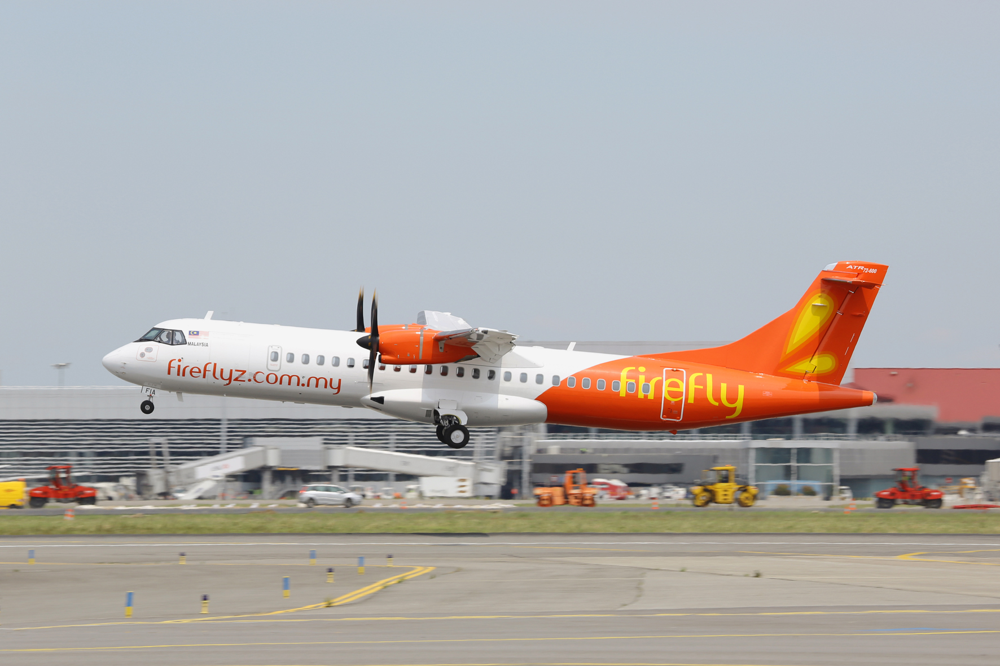
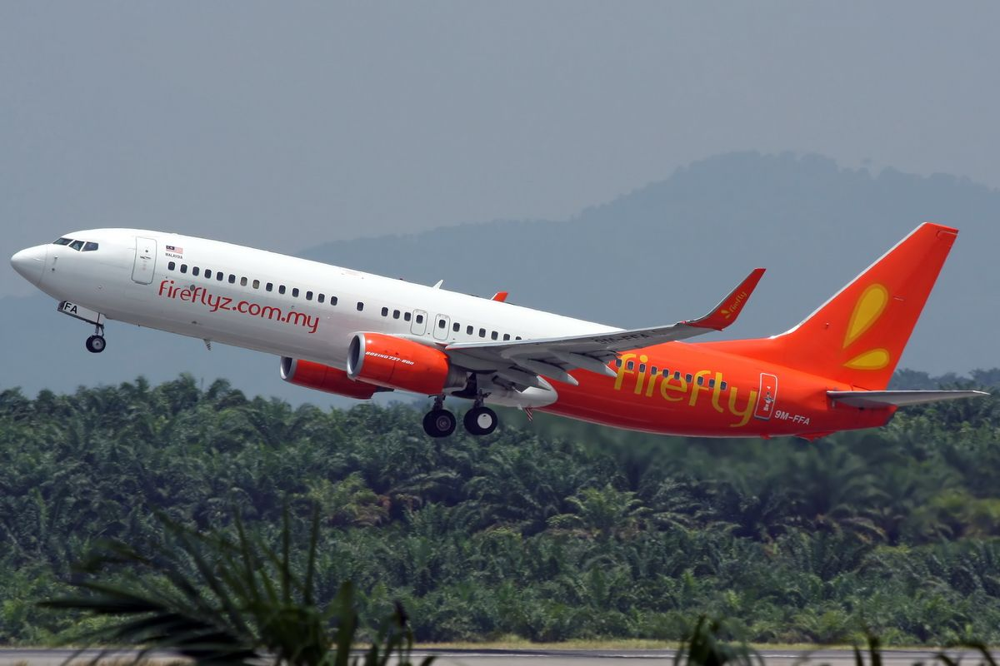

Firefly (stylized as firefly) is a Malaysian regional and a low-cost carrier. It operates as a wholly owned subsidiary of the Malaysia Aviation Group (MAG), alongside Malaysia Airlines and MASwings. Established on 3 April 2007 as a regional carrier, the airline operates domestic flights within Malaysia and to neighboring countries, including Indonesia, Singapore, Thailand and China. Its main hubs are Sultan Abdul Aziz Shah Airport in Subang and Penang International Airport, with a secondary hub at Kota Kinabalu International Airport.

ATR 72-500 turboprop aircraft for short-haul routes

Boeing 737-800 for medium-haul and higher-capacity services.